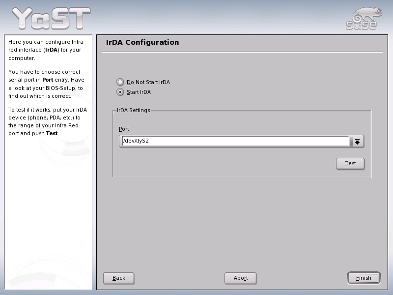
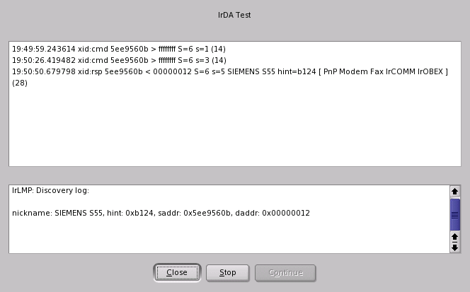

YaST2 IrDA configuration module
1. General
1.1 Introduction
"IrDA (Infrared Data Association) is an industry standard for wireless
communication with infrared light. Many laptops sold today are equipped with
an IrDA-compatible transceiver that enables communication with other devices,
such as printers, modems, LANs, or other laptops.
There are two IrDA operation modes. The standard mode, SIR, accesses the
infrared port through a serial interface. This mode works on almost all systems
and is sufficient for most requirements. The faster mode, FIR, requires
a special driver for the IrDA chip. Not all chip types are supported in FIR
mode because of a lack of appropriate drivers. Set the desired IrDA mode
in the BIOS of your computer. The BIOS also shows which serial interface is
used in SIR mode."
(citation from SLES Admin Guide)
1.2 Requirements for YaST module
- We need a module for easy setup of IrDA devices for infrared communication.
- We need the possibility for the user to test an IrDA-connection.
Limitations: The YaST-based configuration is limited only to SIR mode.
1.3 IrDA Configuration
- Set the serial port used for IR communication. The value (e.g. "/dev/ttyS1")
is saved as IRDA_PORT variable in /etc/sysconfig/irda file.
- Start the 'irda' service
1.4 More about IrDA
Linux-IrDA Project
Linux-IrDA quick tutorial
2. Implementation of YaST configuration module
2.1. Dialogs
Summary Dialog
Here the user should start or stop 'irda' service and select the correct port.
To test the connection, he could use Test button, which opens the test
popup.

Test popup
Two output windows are shown. The first one shows the output of irdadump
application, monitoring the IrDA traffic.
The second window show the contents of /proc/net/irda/discovery file, showing
the list of present (discovered) devices in range.

2.2. The files
For more, see developer's documentation.
Author of this document is Jiří Suchomel (jsuchome@suse.cz).